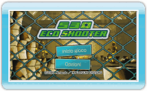

8 |
Come iniziare |
 |
|

Seleziona 530 ECO SHOOTER sul menu Wii, poi scegli AVVIA per accedere allo schermo del titolo. Punta verso una voce di menu e premi
 o o  per confermare. per confermare.
I tuoi progressi di gioco vengono salvati automaticamente ogni volta che porti a termine un livello o che fai dei cambiamenti nello schermo opzioni.
Puoi cancellare i dati di salvataggio nelle opzioni Wii. Per maggiori informazioni consulta il manuale di istruzioni della console Wii: canali e impostazioni.
Quando giochi per la prima volta, prima di accedere allo schermo del titolo verrà creato un file di salvataggio. Per salvare i dati è necessario un blocco di memoria libero nella memoria della console Wii.
Nota: hai un solo file di salvataggio a disposizione.
|
 |
 |
 |